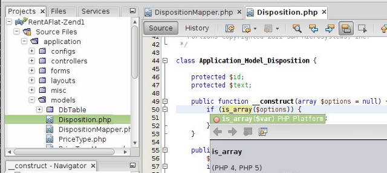

The language-aware NetBeans editor detects errors while you type and assists you with documentation and smart code completion—all with the speed and simplicity of your favorite lightweight text editor.
The IDE's PHP code completion supports PHP 5.4 array styles such as
array dereferencing and
short array syntax. NetBeans IDE also recognizes
Traits and
anonymous object variables (
also called "fluent instantiation"). Finally, NetBeans IDE for PHP includes
minor features such as callable type hints,
binary notation for integers, and Class::{expr}() invocation.

The editor provides automatic code completion (for most common PHPDoc annotations as well). While you type, it lists possible completions: The most obvious and common options are listed at the top, but you can always choose from the full set of options at the bottom. If one completes a method with parameters, IDE tries to compute and insert the most proper variable which is declared right before the completed method.

Use the navigator window or the Go To Type, Go To File, Go To Symbol, Go To Declaration, Find Usages menu items for easy code navigation in large projects. The editor warns about potential code problems by flagging them and giving an hint in a pop-up. A tasks window lists all warnings in the project, making it easy to find and resolve problems.
Refactoring |
Hints |
Insert Code |
|
|
|
|
Fixing Use Statements |
Type Hierarchy View |
|
|
|
|